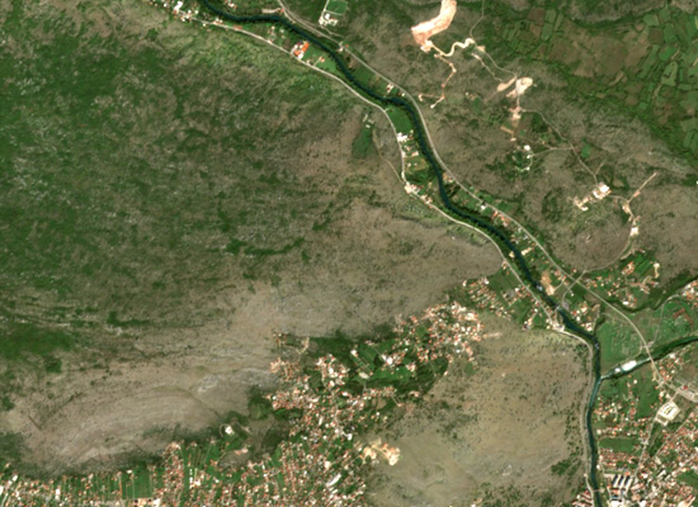
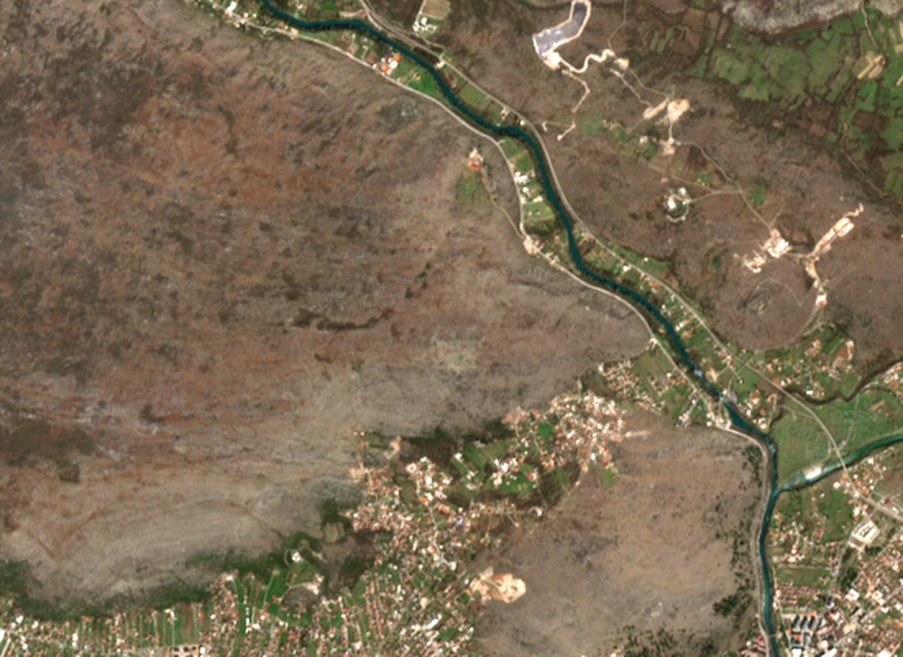
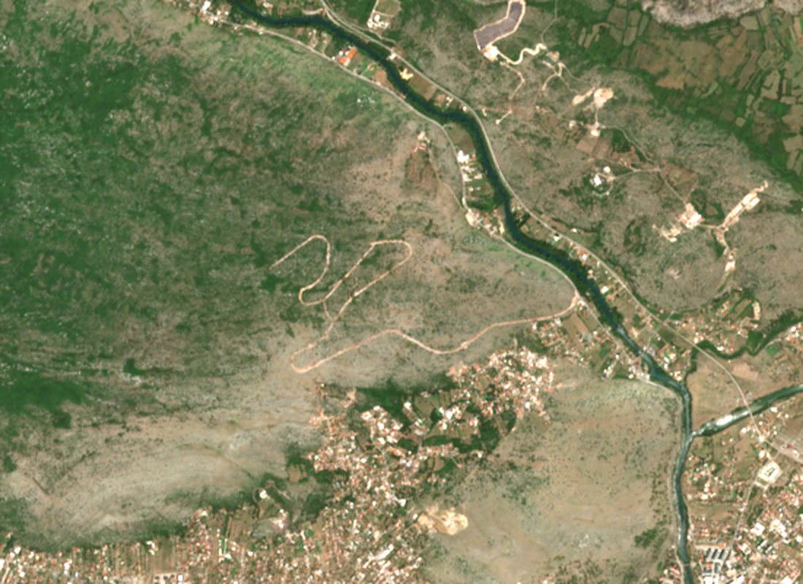
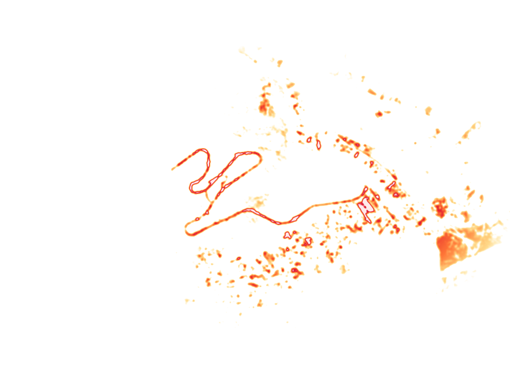

01Teren iz svemira
Trasa se pojavila između marta i jula 2026. Od tada na snimcima nema novih radova.
Četiri snimka Copernicus Sentinel-2 iste padine, sa istom skalom osvjetljenja. Vremenska linija se sama pušta; klikom na datum skačete na snimak.



Trasa je ručno digitalizovana sa snimka od 7. 10. 2026. i duga je oko 5,2 km; zvanično najavljeni bulevar ima 5,3 km. Gradilište bulevara otvoreno je 25. 3. 2026, sa rokom od 120 dana za pripremne radove. Rezolucija je 10 m po pikselu, pa se ne vide mašine ni manji objekti. Sadrži modifikovane podatke Copernicus Sentinel (2024, 2026).

Toplotna mapa sa satelita
Najjača promjena tla na padini je trasa puta. Gradilišta stanova nema.
Boja pokazuje koliko je vegetacije nestalo i koliko je tlo posvijetlilo. Upoređeni su snimci od 2. 10. 2024. i 7. 10. 2026. Prikazana je samo promjena koja se vidi i u julu i u oktobru 2026, a nastala je poslije marta 2026.
Indeks vegetacije NDVI i svjetlina iz kanala Sentinel-2 L2A, 10 m po pikselu. Manje mrlje u naselju i uz rijeku su vjerovatno bašte, njive i privatna gradnja. Izvan označenog područja prikaz je prigušen. Sadrži modifikovane podatke Copernicus Sentinel (2024, 2026).
02Obećanja na provjeri
Od devet obećanja sa rokom ili brojkom, tri roka su već prošla. Nijedno nije ispunjeno kako je najavljeno.
Svako obećanje je upoređeno sa onim što pokazuju dokumenti, ugovori i izvještaji do 20. 10. 2026.
„Sporno“: brojka zavisi od računice i strane koja je iznosi. „Čeka se“: rok još nije prošao. Izvori: CdM, Vlada, Dan, RTCG, Antena M, Investitor, RTPV.
03Profil ostvarenja
Odmakli su samo ugovori i put. Stanovi, dozvole, dokumenti i preduslovi su na nuli.
Paukov dijagram: isprekidana mreža je ono što je obećano ili potrebno (100%), a crvena površina ono što postoji 20. 10. 2026. Svaka osa je jednostavan razlomak, objašnjen u tabeli.
| Osa | Ostvareno |
|---|
04Razmjera
Ugovoreno je 0,9% obećanog. Tempom prve faze, 20.000 stanova gradilo bi se 324 godine.
Svaki kvadratić je 100 stanova. Naš proračun tempa je ilustracija razmjera, ne prognoza: oko 108 faza po 185 stanova i 36 mjeseci, jedna za drugom.
20.000 stanova u kvadratićima
Popunjeno crveno: ugovoreno. Svijetlo: cijeli Blok A1.
- 20.000 obećano
- 557 Blok A1
- 185 ugovoreno
Koliko bi trajalo tempom prve faze
Prva faza: 185 stanova za 36 mjeseci. Radunović: „radiće i deset vlada poslije nas“.
05Cijena kvadrata
Obećano 1.000 € po kvadratu. Po računici iz ugovora, kvadrat košta oko 3.400 € sa PDV-om.
Vrijednost ugovora sa PDV-om (48,46 mil. €) podijeljena je neto površinom stanova. Bez PDV-a to je 2.808 € po kvadratu, kako je izračunao Investitor. Ministarka javnih radova Majda Adžović kaže da trošak iznosi 1.067 € bez PDV-a i da razliku pokriva budžet; ministarstvo ovu računicu osporava.
Linija: prosječna cijena prvih prodaja novih stanova u Podgorici (MONSTAT), €/m². Šuplje tačke: vrijednosti iz medijskih izvještaja o podacima MONSTAT-a. Ugovor: 48.460.227 € sa PDV-om (40.049.774 € bez PDV-a) za 14.260 m² neto stambene površine; uključuje glavni projekat, garaže i uređenje terena, a ne zemljište i priključke. Pređite mišem preko tačaka za vrijednosti.
06Novac
Po cijeni iz ugovora, 20.000 stanova koštalo bi oko 4,3 mlrd. €, više od cijelog državnog budžeta za 2026.
Naša projekcija množi cijenu jednog stana iz ugovora (216.485 € bez PDV-a) sa 20.000. Ne uključuje zemljište, infrastrukturu ni PDV. Vlada svoju procjenu ukupne vrijednosti nije objavila.
Projekcija naspram budžeta i stvarnog novca
Milioni eura, ista skala. Isprekidana linija: cijeli budžet za 2026.
Koliko država dodaje po stanu
Prosječan stan u prvoj fazi ima 77 m²; po obećanih 1.000 €/m² prodavao bi se za oko 77.000 €.
Izvori: ugovor sa konzorcijumom Fidija i Ing Invest (Investitor, Sjever CG); budžet 2026. od 3,79 mlrd. € (Vlada); 10 mil. € u prijedlogu budžeta 2025. i u budžetu 2026. (Press, Vodič kroz budžet Skupštine); izjava ministarke Adžović (Analitika). Projekcija i proračuni po stanu su naši.
07Rokovi
Rok za prve stanove pomjeren je sa sredine 2026. na avgust 2029.
Od obećanog useljenja sredinom 2026. prošlo je 112 dana.
Vodoravno: kada je rok izgovoren. Uspravno: koji je rok obećan. Šuplji krug je rok koji je već prošao. Izvori: CdM (21. 9. 2024), Vlada (27. 12. 2024), RTPV (22. 3. 2026), ugovor (21. 8. 2026).
08Kalendar projekta
26 mjeseci, 55 događaja: ugovori, kritike i provjere. Red za gradnju stanova je prazan.
Toplotna mapa broji događaje iz naše hronologije po mjesecu i temi. Tamnija ćelija znači više događaja. Pređite mišem preko ćelije za spisak.
Broj događaja iz hronologije ovog istraživanja, ne mjera ukupne medijske pažnje. Gdje tačan datum nije potvrđen, mjesec je približan.
09Prepreke
Za stanove još nema vode, dozvole ni procjene uticaja.
Voda
Prema Standardu, Vodovod je u novembru 2025. odbio uslove za priključenje dok se ne istraže izvorišta. Mareza daje oko 60% vode Podgorici; studija kaže da se uticaj ne može isključiti. Ministarka Adžović: projekat neće ugroziti vodosnabdijevanje.
Standard · 24kroz7 · Antena MDalekovodi 400 kV
Dva voda, Podgorica–Tirana i Podgorica–Ribarevine. Prema Standardu, CGES kaže da uslovi ne dozvoljavaju izmještanje dok su to dva odvojena dalekovoda. Ministarstvo: u koridoru se gradi samo bulevar.
Standard · PressProcjena uticaja
Agencija za zaštitu životne sredine odlučila je da je procjena za Blok A1 obavezna. Elaborat nije urađen; postupak obično traje 12 do 18 mjeseci.
Dan · PV InformerGrađevinska dozvola
Nema dozvole ni za Blok A1 ni za bulevar. Za Blok A1 najavljivana je za novembar ili decembar 2026; glavni projekat je u izradi.
Dan · Investitor · Antena MPravila za kupce
Postoji samo nacrt pravilnika: prednost imaju podstanari i mladi bračni parovi. Usvajanje je najavljeno za prvu polovinu 2026. Zabrana preprodaje nije propisana.
Dan · RTCGFinansijski model
Studija izvodljivosti, finansijska analiza i izvještaji Koordinacionog tijela nisu objavljeni. Banka za kamatu od 1,2% nije imenovana. Prema saopštenju podstanara, AZLP je utvrdila da ministarstvo nije u roku odlučilo o njihovom zahtjevu.
MINA · RTNKZemljište
Ministarka Adžović kaže da je više od 90% parcela državno. Površina i trošak eksproprijacije ostatka nisu objavljeni.
CdM · Antena M · Dan10Mreža aktera
Ko je s kim povezan: novac teče od jednog ministarstva, a kritike i kontrola dolaze sa svih strana.
Svaka veza je dokumentovana u izvorima. Debljina crvene linije prati vrijednost ugovora. Pređite mišem preko čvora da vidite njegove veze, a čvorove možete i pomjerati.
Spisak svih veza
11Saslušanje i glasovi
Šta kažu vlast, kritičari i institucije
Prema izvještaju Vijesti, koji je potvrdio kabinet ministra, Specijalno policijsko odjeljenje saslušalo je ministra Slavena Radunovića i Mirjanu Đurišić, v.d. generalne direktorice Direktorata glavnog državnog arhitekte. Povod je, prema ministru, anonimna prijava „jednog od protivnika projekta“ o navodnim proceduralnim manjkavostima konkursa. Datum saslušanja nije poznat. Radunović kaže da ništa nije bilo nezakonito. Niko nije optužen; saopštenje tužilaštva ni policije nismo našli.
„Crnogorski san konačno može da počne.“Milojko Spajić, 27. 12. 2024.
„Projekat Velje brdo radiće i deset vlada poslije nas.“Slaven Radunović, mart 2026.
„I ako istraživanje pokaže da se Velje brdo nalazi u zoni sanitarne zaštite izvorišta Mareza, to ne znači zabranu gradnje.“Majda Adžović, Skupština, jun 2026.
„Bilo kakve izgradnje na Veljem brdu neće i ne može biti“ dok se ne sprovede procjena uticaja.Zoran Dabetić, državni sekretar Ministarstva ekologije, jesen 2026.
„Velje brdo se može samo u snovima zamisliti.“Radenko Pejović, penzionisani profesor Građevinskog fakulteta, Monitor, 8. 5. 2026.
„Rokovi za Velje brdo ponovo se pomjeraju.“Ana Novaković Đurović, URA, 19. 10. 2026.
„Nema zakona niti odluke Vlade koji bi formalno garantovali realizaciju prema prvobitnim najavama.“Udruženje podstanara Crne Gore
„Velje Brdo je obmana – 3,5 milijardi za iluziju bez pokrića.“Sonja Dragović, NVO KANA, april 2026. KANA navodi i sukob interesa u žiriju konkursa; ministarstvo kaže da je konkurs sproveden zakonito i bez sukoba interesa.
12Kako bi naselje trebalo da izgleda
Prvi blok zauzima manje od jednog procenta planirane zone.
Za Blok A1 izabrano je rješenje Dejana Milanovića i Grozdane Šišović iz Srbije, od 29 radova na međunarodnom konkursu. Zvanične vizualizacije objavljene su na sajtu konkursa Ministarstva prostornog planiranja.
- Zona naselja
- 912 ha, od toga 393 ha zelenih površina; plan za 40.000–42.000 stanovnika
- Blok A1
- 61.356 m², 557 stanova: 296 od 60 m² i 261 od 100 m², u tri etape
- Prva faza
- 6 zgrada, 185 stanova (106 od 60 m², 79 od 100 m²), 2 podzemne garaže sa 384 mjesta
- Izvođač
- Konzorcijum IGP Fidija i Ing Invest, jedina ponuda; 9 podizvođača
- Bulevar
- 5,3 km, Eurozox, 30,86 mil. € bez PDV-a, rok 540 dana
- Cijelo naselje
- najmanje 3,5 mlrd. € prema anonimnom izvoru iz građevinarstva (Vijesti, 2024); Vlada nije objavila procjenu
13Izvori
Dokumenti i tekstovi na kojima se stranica zasniva
Glavni izvori su navedeni ispod. Ključne tvrdnje koje potiču iz samo jednog izvora navedene su uz ime tog izvora. Naše računice, kao projekcija troška i tempo gradnje, označene su kao naše.
Napomena o sukobu interesa: Podaci.me izdaje Fidelity Consulting d.o.o. Fidelity Consulting je od 2024. javno kritikovao ovaj projekat: tvrdio je da obećane rate ne odgovaraju cijeni od 1.000 €, da su premijer Spajić i ministar Radunović obmanuli građane i da je procijenjena vrijednost tendera za pripremne radove na bulevaru previsoka. U kalendaru i u mreži aktera te kritike su označene kao kritike izdavača.
- CdM: predstavljanje projekta, 21. 9. 2024.
- Vlada: „Ništa neće zaustaviti realizaciju projekta“
- Vlada: otvoreno gradilište bulevara
- Portal javnih nabavki: tender i ugovor za Blok A1
- Investitor: kvadrat će koštati najmanje 2.808 €
- Analitika: Adžović o cijeni od 1.067 €
- Sjever CG: šta piše u ugovoru
- MONSTAT: cijene novogradnje, II kvartal 2026.
- Standard: Vodovod ne da uslove
- Dan: Radunović saslušan zbog Veljeg brda
- Dan: Ništa od početka gradnje u decembru
- Investitor: preusmjeravanje 4,83 mil. €
- RTPV: Radunović o „deset vlada“
- Vlada: budžet za 2026.
- Copernicus Sentinel-2 L2A, arhiva na AWS Open Data